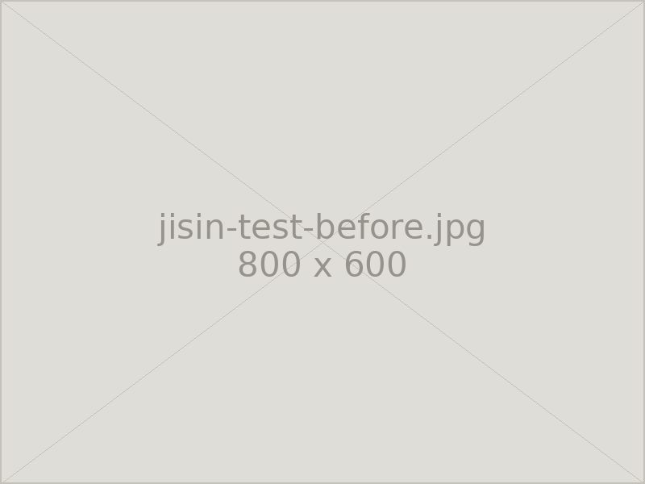
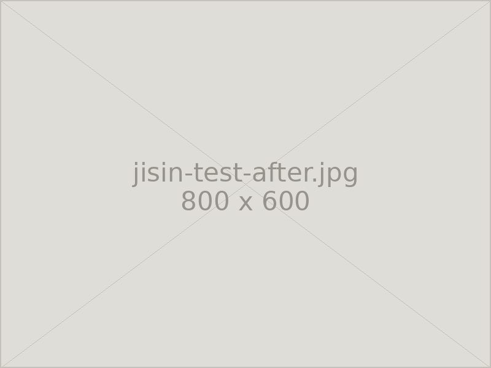

地震対策・免震パット
震度7対応の免震施工で大切なお墓を守ります。石と石のあいだに免震ゲルを挟み込み、揺れの力を逃がします。
免震ゲルとは
お墓は複数の石を積み上げて建てられているため、大きな地震では上に載った石がずれたり、倒れたりすることがあります。免震ゲルは、その石と石の接合部に挟み込む、粘着性の高いゲル状のパットです。
地震の揺れが伝わると、ゲルが伸び縮みして力を吸収し、石がずれようとする動きをその場に引き戻します。接着剤のように固めてしまうのではなく、あえて動きを許しながら元の位置に戻すという考え方で、石を割らずに倒壊を防ぎます。
新しくお墓を建てる際はもちろん、すでに建っているお墓にも後から施工できます。石を一度上げ下ろしする作業になりますので、リフォームやクリーニングとあわせてのご依頼が多い工事です。
京都大学防災研究所での振動実験
免震ゲルの効果は、京都大学防災研究所の振動台を用いた実験で確認されています。実際の地震波を再現した振動台の上に、免震ゲルを施工したお墓と施工していないお墓を並べ、同じ揺れを与えて比較する試験です。
震度7相当の揺れを加えたところ、施工していないお墓は上部の石がずれて崩れたのに対し、免震ゲルを施工したお墓は大きくは崩れず、その場にとどまることが確認されました。カタログ上の数値ではなく、実物大での試験にもとづいた工法です。


※ 写真は実験のイメージです。実験条件により結果は異なります。
施工方法
- Step 01現地調査お墓の大きさ、石の構成、目地の状態を確認し、必要な施工箇所を判断します。
- Step 02石の取り外し竿石・上台・中台などを順に慎重に取り外します。既存の目地は丁寧に除去します。
- Step 03免震ゲルの設置接合面を清掃・乾燥させたうえで、所定の位置に免震ゲルを貼り付けます。
- Step 04据え直し・仕上げ水平を確認しながら石を据え直し、目地を打ち直して仕上げます。
施工価格
| 新規建立にあわせて施工 | お墓の新規建立とあわせて施工する場合の追加費用です。お墓の大きさ・段数により変わります。お見積り時にご提示いたします。 |
|---|---|
| 既存のお墓に施工 | すでに建っているお墓への施工です。石の取り外し・据え直し・目地の打ち直しを含みます。石の大きさと段数、現地の作業条件により変わります。 |
| 他の工事とあわせて | クリーニングやリフォームとあわせてご依頼いただくと、石の上げ下ろしが一度で済むため費用を抑えられます。 |
※ 施工価格はお墓の大きさ、石の段数、墓地までの搬入経路などによって変わります。現地を確認したうえで正式なお見積りをお出しします。
※ お見積り・現地調査は無料です。まずはお電話でご相談ください。
お気軽にご相談ください
お見積り・ご相談は無料です。まずはお電話でお聞かせください。
営業時間 8:00〜17:00 ／ 定休日 毎月14・15日、土日
FAX 03-3333-8452